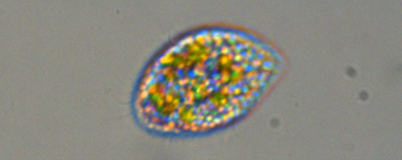

Introduction
As a senior at the University of Miami studying Marine Science and Biology, finding research experience in a lab was important to me. After finding a position in the del Campo microbiology lab, I was able to gain lab experience first hand. I have learned numerous skills like subculturing, lab cleaning, growing ciliates, and bettered my research abilities. After working in the lab for extended period of time, I finally began my own research project.
My Research Project
Under the supervision of a graduate student also working in the del Campo lab, I began my own research project trying to understand and perfect the mechanics of isolating ciliates from diverse cultures. The microbiology lab received numerous cultures that were mixed with different types of single-celled organisms living together in marine cultures. However, the isolation of ciliates from such mixed cultures has not yet been explored in full depth, making it difficult to obtain cultures of pure ciliates. Without having purified cultures of ciliates, they cannot be genome sequenced to determine what type of ciliates they are. My goal for my project is to isolate the ciliates from the cultures I am responsible for in order to determine what ciliates we have been growing throughout the semester.
Background
Ciliates are a single-celled animal that are characterized by having cilia, which are structures that allow for them to move. However, they are similar to phytoplankton in the sense that their movement abilities do not surpass that of currents. Therefore, ciliates move with the currents and are not a sentient animal. There are an abundance of different ciliate populations. While the species are genetically different, they all look similar under a low magnification microscope, making it nearly impossible to determine what species the ciliates are without sequencing their genomic composition.
A culture cannot be run through a genome sequencer unless it contains only a single species. The cultures that were obtained in this lab were mixtures of: algae, ciliates, diatoms, and even fungus. If these mixed cultures were put through a sequencer without first being purified, the genome sequence would be a mix of everything present, not yielding any results that could be understood.